EC商品説明文を生成AIで作る｜公開前の確認工程と担当の決め方
ECの商品説明文を生成AIで下書きできるようになったあと、多くの店舗が「これを公開してよいのか」で止まります。本記事はその判断を工程に落とします。確認する観点を五つに固定し、商品…
EC・DX・AI活用に関する実践的な情報を発信しています。
このカテゴリの記事はまだありません。
ECの商品説明文を生成AIで下書きできるようになったあと、多くの店舗が「これを公開してよいのか」で止まります。本記事はその判断を工程に落とします。確認する観点を五つに固定し、商品…

OWASP LLM Top 10は、生成AIの危険を「事業に何が起き、どこまで対処し、何を承認してほしいか」という経営判断の言葉へ変える共通言語です。本記事では、中小企業の発注側…

AIカスタマーサポートを導入したのに「かえって現場が混乱した」という声は少なくありません。その多くは、AIと有人オペレーターの役割分担と、AIから人へ引き継ぐエスカレーション動線…
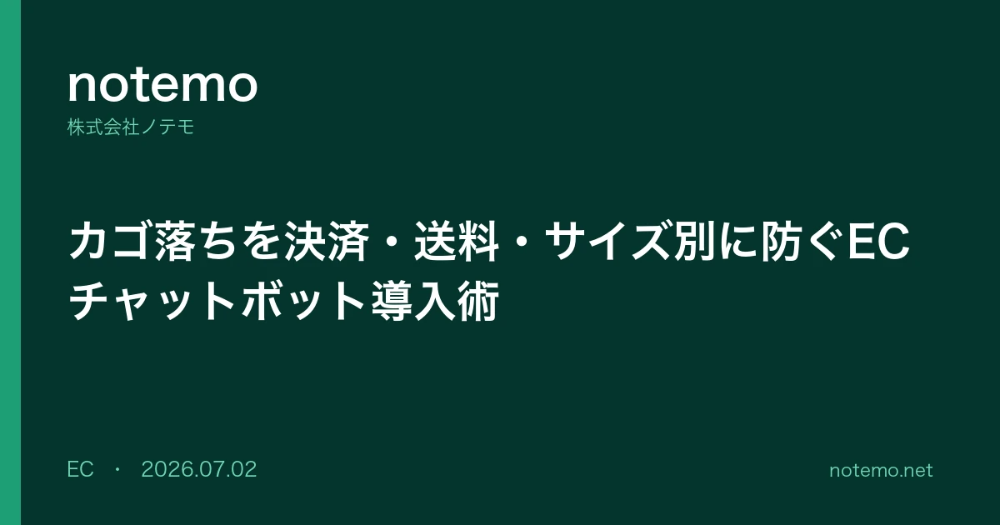
ECサイトにチャットボットを導入してカゴ落ちを防ぐには、決済不安・送料や追加費用・サイズ不安・登録の手間という離脱要因ごとに、会話シナリオを設計することが重要です。本記事では、発話トリガ…
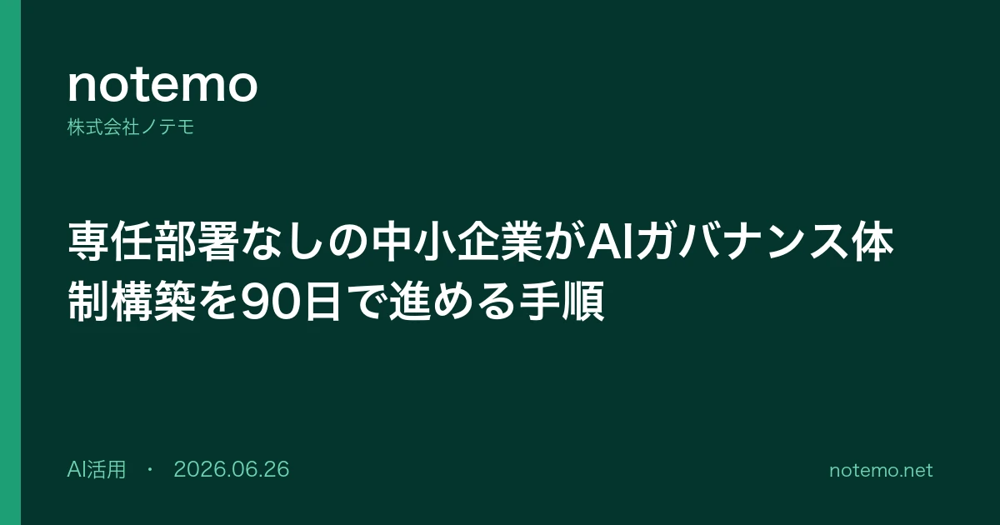
AIガバナンスの体制構築は、専任部署や倫理委員会を持つ大企業だけの話ではありません。本記事は、情シスや総務を兼務しながらAI導入も任されている中小企業の担当者に向けて、専任部署な…
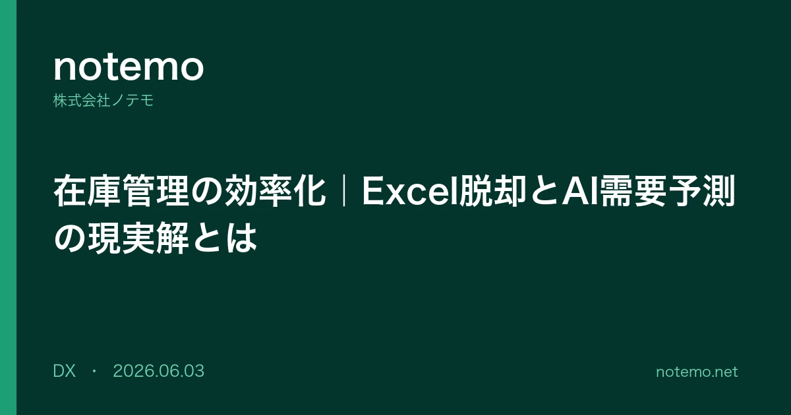
在庫管理の効率化は、いきなりシステムを導入する前に「現状の棚卸し→Excelの限界の見極め→適正在庫の設計→段階的なシステム・AI活用」という順序で進めると失敗しにくくなります。…
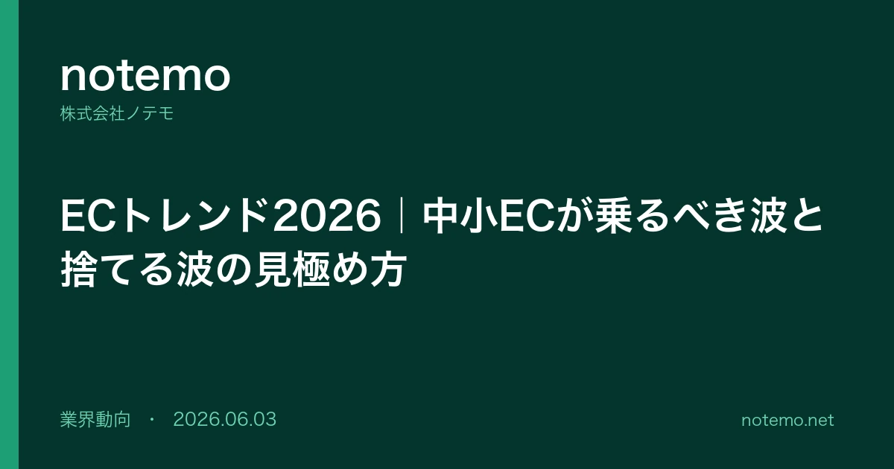
ECトレンド2026を、自社ECを運営する中小・D2C事業者の視点で整理します。経済産業省のデータで市場の二極化を押さえたうえで、生成AI・SNSコマース・OMO・越境ECなどの…
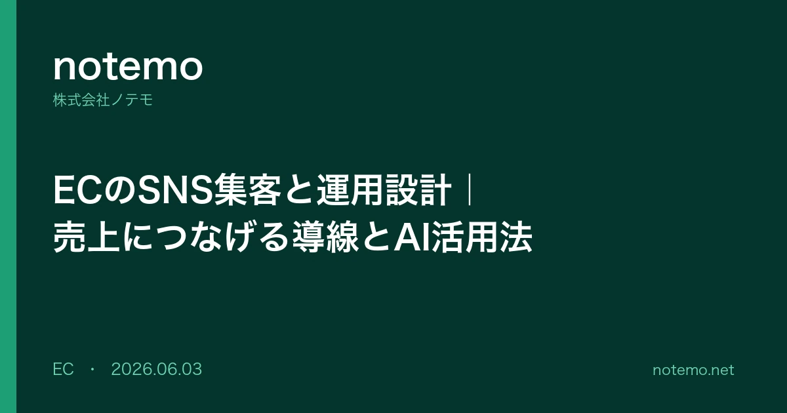
ECのSNS集客と運用は、フォロワーを増やすことよりも「売上につながる導線をどう設計するか」で成果が分かれます。本記事では、転換率の低い土台にSNSで人を流しても売れない理由から…
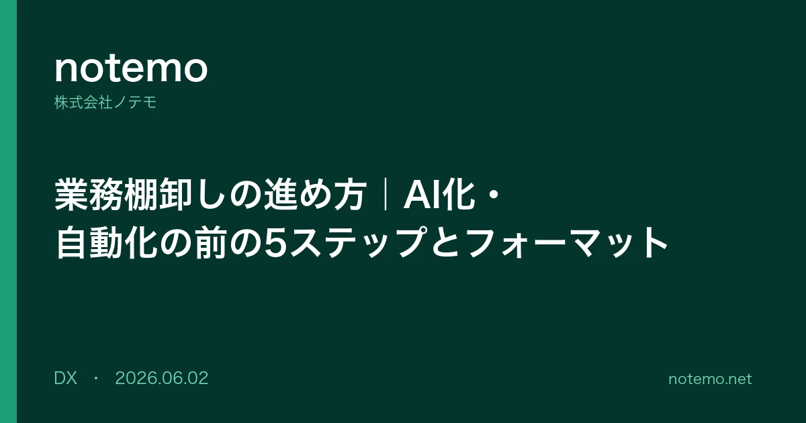
業務棚卸しの進め方を、AI化・自動化の「前段」という視点で再整理します。単なるリスト化で終わらせず、洗い出し→可視化→ムダ判定→再設計→自動化対象の選定という5ステップで、属人度…
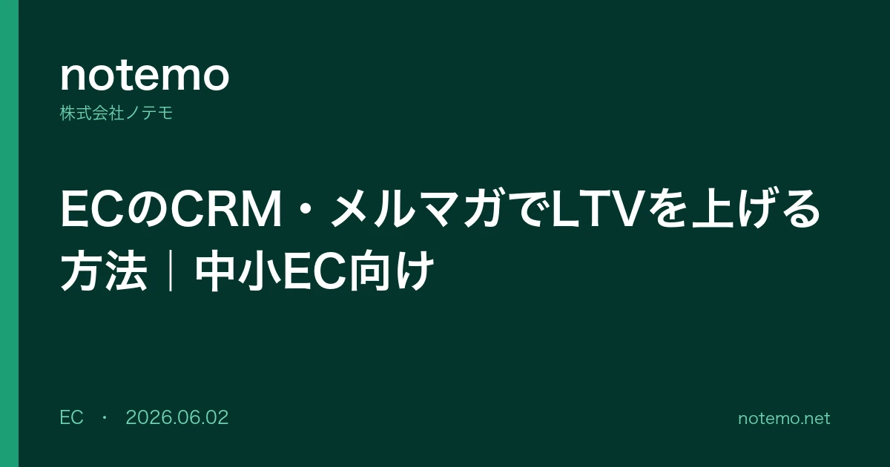
EC の CRM・メルマガで LTV を上げるには、高機能ツールを入れる前に「まず手で回せる設計」を固めることが近道です。本記事では、LTV の考え方と現状把握から、購入直後 →…
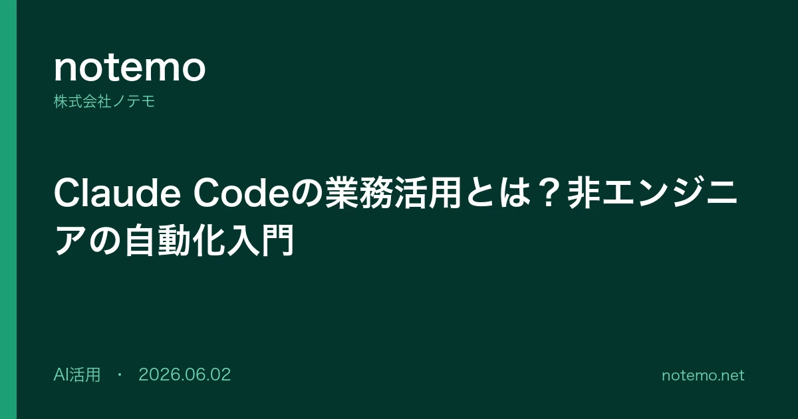
Claude Code の業務活用を、ChatGPT などのチャット型 AI は触ったことがある非エンジニア向けにやさしく整理します。チャット型 AI との違いから、小売・EC …
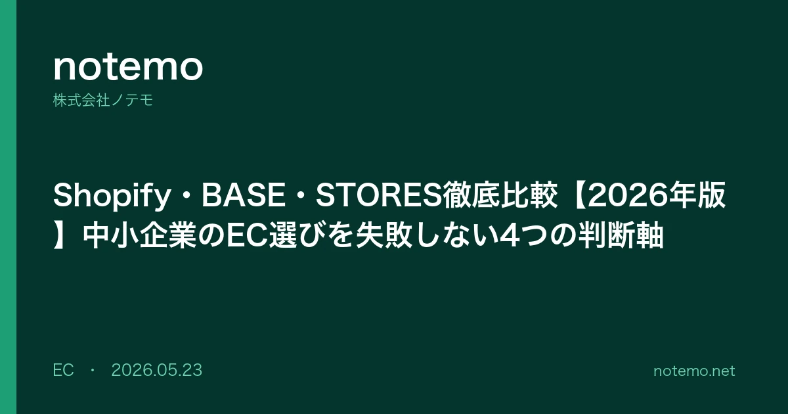
Shopify・BASE・STORESを比較した記事は数多くありますが、料金体系や手数料が頻繁に改定されるため、最新の公式情報ベースで判断することが何より重要です。中…
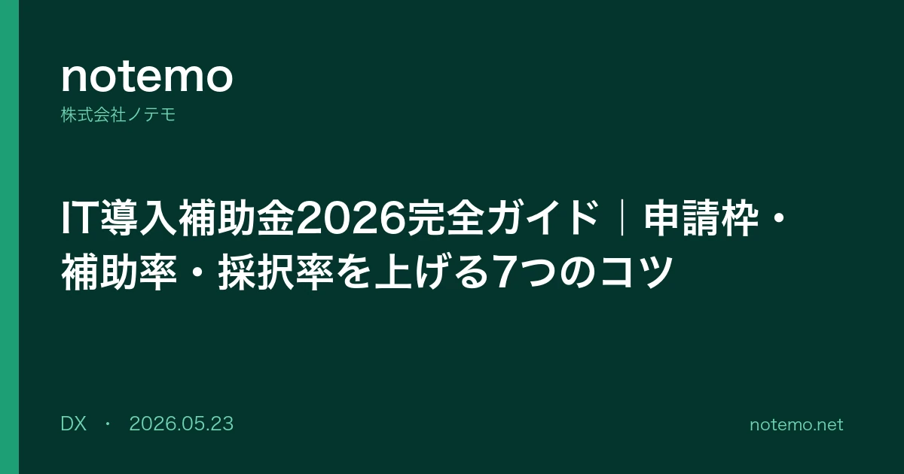
中小企業が2026年度にIT導入補助金を活用するためのポイントを、公式情報ベースで整理します。今年度から制度名は「デジタル化・AI導入補助金2026」に変わり、AIを含むソフトウ…
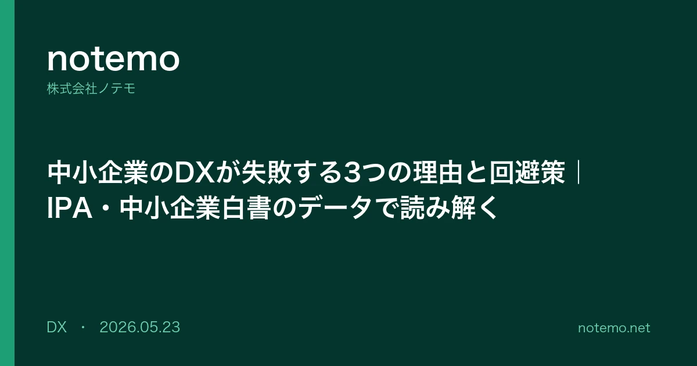
中小企業のDXが失敗した事例を整理すると、原因は技術選定よりも経営の意思決定構造に偏っていることがわかります。IPAの「DX動向2025」では、日本企業の85.1%でDXを推進する…
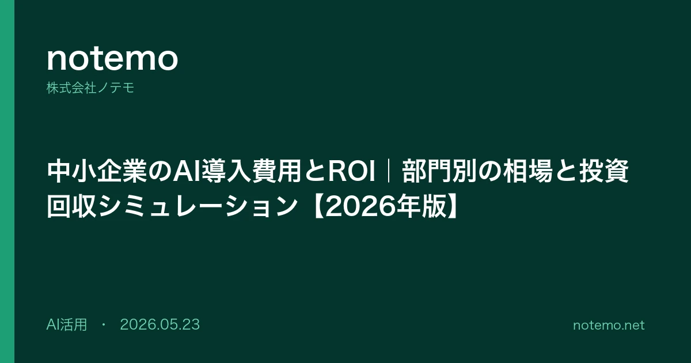
中小企業がAIを導入する際の費用とROI（投資対効果）の相場感は、生成AIの普及で大きく変わりました。月額数万円から始められるツールが増え、初期投資のハードルは下がっている一方、効果測定の設計を誤る…
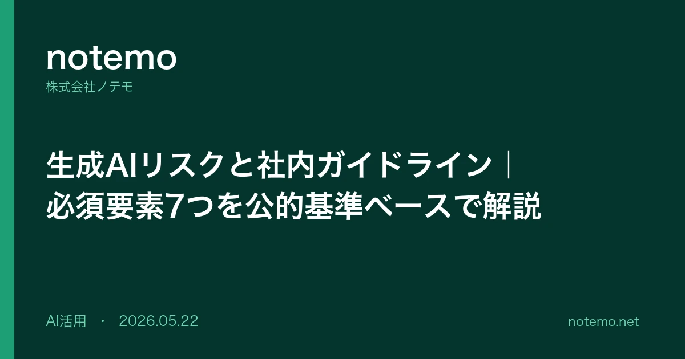
生成AIのリスクに備えた社内ガイドラインを整備しようとすると、情報システム部長やコンプライアンス責任者の方は「どこまで禁止すべきか」「経営層にどう説明すべきか」「現場の利便性を落とさ…
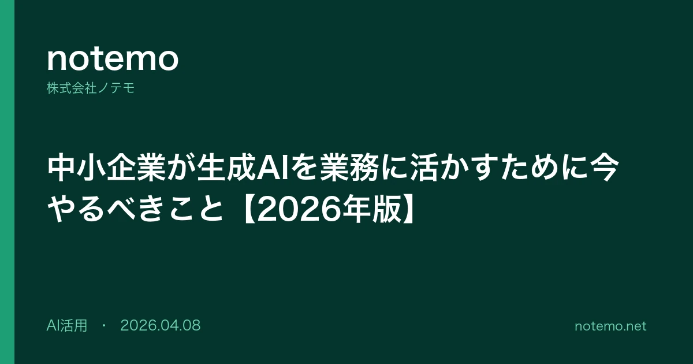
生成AIを活用する企業が増える一方、使いこなせていない企業も多いのが実態です。今取り組むべき3ステップを解説します。
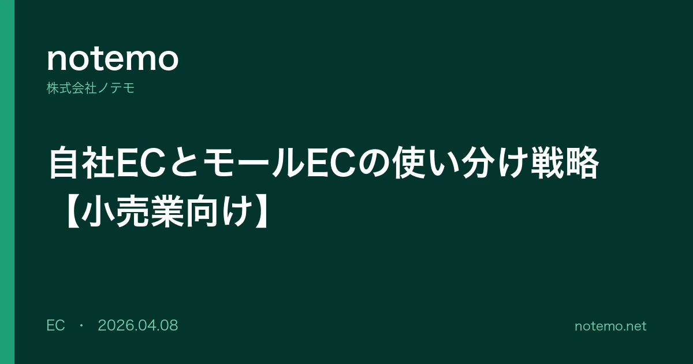
楽天・AmazonなどのモールECと自社ECサイト、どう使い分けるべきか。経済産業省のデータをもとに解説します。